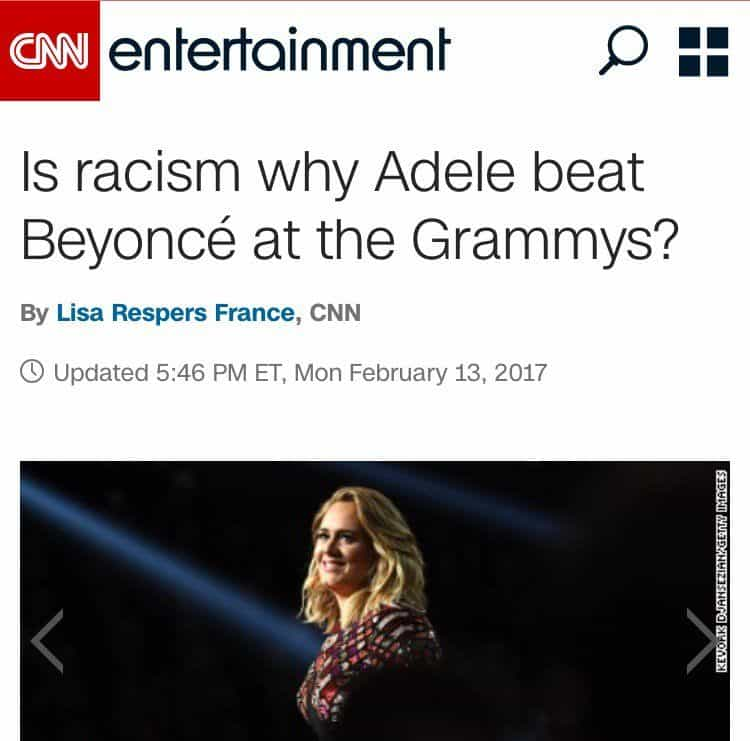
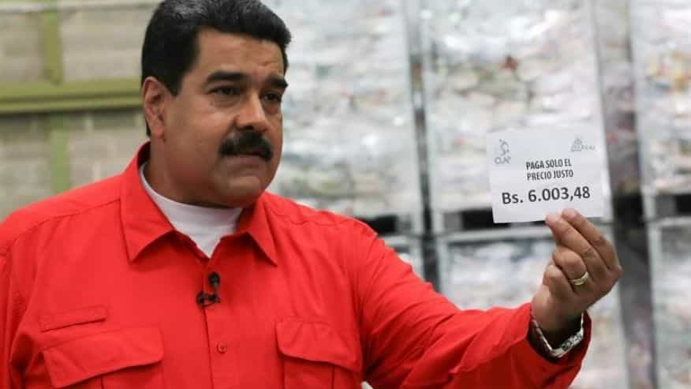
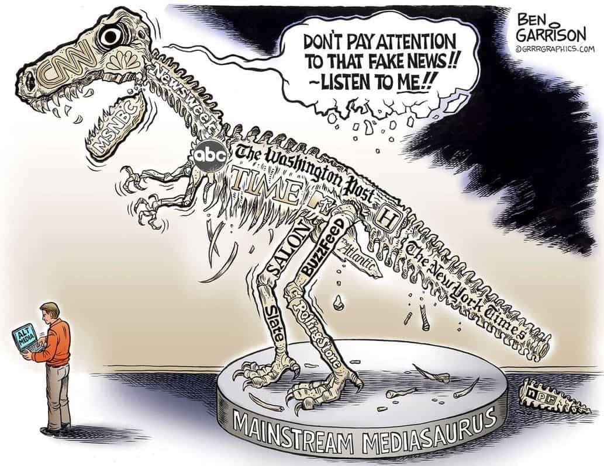

< < < Back
5 Examples Of CNN’s “Fake News” – Return Of Kings
Recently there’s been a lot of talk about whether or not the media has our best interests at heart, and with more and more men awakening from the feminist matrix, it seems that the mainstream media is going the way of the dinosaur.
Donald Trump has been urging the public not to trust the mainstream media, but I’m sure that if you’re a reader of Return Of Kings, you don’t need him to tell you that. The modern mainstream media is basically the same thing as the Church was in the 1200’s—they control the flow of information, and they don’t like it when people disagree with them. In fact, if someone who disagrees with them gets popular enough, they often times resort to smear campaigns (see: smearing Roosh as a manipulative pickup artist, and Milo as a pedophile apologist).
Now, I know what you’re thinking—“I know the media doesn’t report on things, Jon, but fake news? That’s, like, intentionally lying and manipulating information, isn’t it?” Yes, sir, it is—and this is what the mainstream media, particularly CNN, has been doing ever since television became popular.
Here’s 5 examples of how CNN is, in fact, “fake news”:
1. Kicking Bernie Sanders Off-Air
https://www.youtube.com/watch?v=BWQcxUIYUcQ
Bernie Sanders, the unofficial leader of the socialist movement in America, recently called CNN “fake news,” before being kicked off the air. CNN tried to play this off as a “connection issue,” but anyone with a grain of common sense knows better.
Bernie: “…who is the head of Russia, and now we’re learning that there may have been discussions between Flynn and the Russians, about sanctions, before this administration took power. So this is very, very troubling, and I think the president is going to have to tell us what he’s gonna do about it.”
CNN Anchor: “So far he hasn’t said much…he was asked about Flynn on his flight to Mar-a-Lago late today…here’s how he responded:
[plays clip of Donald Trump denying obvious lie directed towards him]
CNN Anchor: “He says he hasn’t seen any of these reports. Is that a problem?”
Bernie: “Well, I don’t know, maybe he was watching CNN Fake News, what do you think?”
Bernie: [sees her offended look] “It was a joke.”
CNN Anchor: “You don’t buy what he said, obviously?”
Bernie: “Erin?”
Bernie: “Kevin, I’m not—are we on?”
CNN Anchor: “Umm, it looks like we’ve lost connection with Senator Sanders…”
Right, of course. You just happened to “lose connection,” with Senator Sanders conveniently right after he called you fake news.
2. “Racism” Is Why Adele Won Grammy

After Adele won the song of the year, record of the year, and best solo pop performance awards, it wasn’t long before CNN charged in to proclaim that “racism,” was the cause. CNN “reports”:
…”but with its racial themes and imagery, some are questioning if the project was “just too black” for Grammy voters. Kevin Powell, author of the memoir “The Education of Kevin Powell” and a forthcoming biography on rapper Tupac Shakur, thinks so. He told CNN “Beyonce’s ‘Lemonade’ made a lot of people uncomfortable, because it is so political, so spiritual, so unapologetically black, and so brutally honest about love, self-love, trust, betrayal.”
Right, because apparently Beyonce, despite being nominated for 62 Grammy awards, and winning a whopping 22 Grammy awards, is being discriminated against. In the Leftist’s delusional reality, any time a white person succeeds, it’s due to “racism,” yet any time a black person succeeds, it’s due to “overcoming insurmountable odds.”
Give me a break. Adele won the Grammy, because the panel thought her songs were better, period. This has nothing to do with racism, but apparently CNN still thinks it’s a good idea to race-bait the hell out of current events in 2017. I don’t see this changing anytime soon, either.
3. Venezuela Bans CNN For Lies

According to Fox News World, the president of Venezuela actually asked CNN to leave:
“CNN, do not get into the affairs of Venezuelans. I want CNN well away from here—outside of Venezuela. Do not put your nose in Venezuela.” -Nicolas Maduro
…and can you blame him? CNN has repeatedly shown how ridiculously biased they are, and they’ve shown how willing to lie they are, for the past year after running a gigantic smear campaign against Donald Trump.
Didn’t CNN claim that The Donald had a 3% chance of being elected president? What did they do, just poll the gender studies department at UC Berkeley? I wouldn’t be surprised if they did, because nobody in their right mind would ever accidentally come to the conclusion that our current president had a 3% chance of winning.
In fact, other independent journalists such as Mike Cernovich actually predicted that Donald would win months before the election day in November—how? Because they saw the trends. They saw that men were tired of being emasculated and having their lives ruined, they saw that we’re tired of being shamed for our whiteness, and they saw that the people of America were starting to wake up from their NWO conditioning.
4. “Our Job Is To Control Exactly What People Think.”
Yeah, yeah—I know this one isn’t CNN, but they’re all the same to me. MSNBC, NBC, CBS, ABC, CNN, and even Fox News to an extent…they’re all just different heads on the same globalist-controlled hydra. Buckle in though, boys, because this one’s pretty bad…and it just happened days ago.
Mika Brzezinski, whose name should automatically create suspicion in the wary citizen, recently stated on MSNBC that it’s “our job,” to “control exactly what people think.” I honestly couldn’t even make this stuff up, but if you don’t believe me, you can watch it in the video above.
Mika Brzezinski: “Well, I think the dangerous edges here are that he’s trying to undermine the media, trying to make up his own facts, and it could be that while unemployment and the economy worsens, he could have undermined the messaging so much that he could control exactly what people think…and that is our job.”
No, Mika, that isn’t your job. Your job is to report the facts and let THE PEOPLE decide what to think, but if you can’t get that through your thick skull I guess we’ll just stop watching your crappy network.
5. Donald Trump Calls CNN “Fake News”
Ah, I saved the best for last—I do love me some Donald burns. After a CNN “news reporter” tried to aggressively ask Donald a question for some odd 20 seconds, repeatedly interrupting him and interjecting his way into the conversation, Donald lost it and called him “fake news.”
And who could blame him? They spent the last 8 months doing absolutely everything within their power to completely ruin Donald Trump’s chances at winning…and yet, by the grace of God, and by the memes of Pepe, lord of Keks, the Trump train smashed its way through the entire god damn establishment…and won.
Trump: [to other reporter] “Go ahead.”
CNN Fake News: “MR. PRESIDENT SINCE YOU’RE ATTACKING US CAN YOU GIVE US A QUESTION!”
Trump: [to CNN] “No.”
Trump: [to other reporter]: “Go ahead.”
CNN Fake News: “MR. PRESIDENT ELECT! MR. PRESIDENT ELECT! SINCE YOU ARE ATTACKING OUR NEWS ORGANIZATION,”
Trump: [to CNN] “No, not you.”
Trump: [to other reporter] “Go ahead.”
CNN Fake News: “CAN YOU GIVE US A QUESTION,”
Trump: [to CNN] “Not you.”
CNN Fake News: “GIVE US A CHANCE! MR PRESIDENT”
Trump: [to CNN] “Your organization’s terrible.”
CNN Fake News: “CAN YOU GIVE US A CHANCE, JUST LET US ASK…”
Trump: [to CNN] “Your organization’s terrible.”
CNN Fake News: “LET US ASK A QUESTION, SIR! SIR!”
Trump: [to CNN] “Quiet.”
This goes on for literally 25 seconds, before Trump finally becomes visibly angry and proclaims:
Trump: [to CNN] “You are fake news.”
If the President of the United States of America thinks that CNN is fake news, I think they’re probably fake news.
Summary

In conclusion, if you still watch the mainstream media, don’t. Get your news from real news sites, like Return Of Kings, Info Wars, Gateway Pundit, Drudge Report, and Cernovich. The MSM has shown us multiple times in the past that they’re globalist whores, selling out the American public to fatten their own pockets.
I recently bought an Info Wars shirt to start wearing around in public, and the results have restored my faith in America. Everywhere I wear it, I’ve gotten complements—it’s not that often, but you’d be surprised how many men are awake, but just don’t broadcast it.
The MSM would have you believe that 99% of the American public hates Trump, but it’s really only something like 10% who hate him, and maybe 25% more who dislike him.
I usually wear Info Wars, Breitbart, and Trump apparel to the gym, because most guys who have a shredded six pack from lifting heavy ass weights are strong and masculine, and are therefore not subject to stupid social pressures that the media uses to influence you.
Do your part in spreading the good gospel of the manosphere, the alt-news, and the resurgence of America, and we’ll reclaim our country for sure. Let’s all make America great again.
 If you like this article and are concerned about the future of the Western world, check out Roosh's book Free Speech Isn't Free. It gives an inside look to how the globalist establishment is attempting to marginalize masculine men with a leftist agenda that promotes censorship, feminism, and sterility. It also shares key knowledge and tools that you can use to defend yourself against social justice attacks. Click here to learn more about the book. Your support will help maintain our operation.
If you like this article and are concerned about the future of the Western world, check out Roosh's book Free Speech Isn't Free. It gives an inside look to how the globalist establishment is attempting to marginalize masculine men with a leftist agenda that promotes censorship, feminism, and sterility. It also shares key knowledge and tools that you can use to defend yourself against social justice attacks. Click here to learn more about the book. Your support will help maintain our operation.
Read More: 10 Recent Examples of Fake News From The “Real News” Media